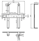

CAD
| Beispiele | |
|  | |
| 2D-Zeichnung | 3D-Volumenmodell |
"Mit CAD-Programmen erstellt man nicht nur technische Zeichnungen. Mit den aufwändigeren Programmen werden zunächst einmal dreidimensionale Volumenmodelle erstellt. Daraus können zwei- oder dreidimensionale Zeichnungen und sogar bewegte Visualisierungen der Objekte abgeleitet werden. CAD-Software kommt in allen Fachbereichen, in denen Konstruktionen entwickelt werden, zur Anwendung." (Quelle: CAD )
Diese Seite soll einen Überblick über die für Linux bzw. Ubuntu nativ verfügbaren 2D- und 3D-CAD-Programme geben. Dabei wird zwischen Open Source und kommerziellen Programme unterschieden.
Open Source Programme¶
| Programm | Branche | Beschreibung | Installation |
| LibreCAD | Allgemein | vollständig freier Fork von QCad, Plugins möglich, 64bit, portiert auf Qt4 | librecad (universe, ab Ubuntu 12.04) |
Wings-3D  | Allgemein | Wer mal in die Welt des 3D-Modelling hineinschnuppern möchte, findet in Wings 3D ein einfach zu bedienendes Einsteigerwerkzeug. | wings3d (universe) |
| OpenSCAD | Allgemein | Erzeugen von 2D- und 3D-Geometrie und Rendern über Skriptsprache. | Binary und Sourcecode hier |
| Antimony | Allgemein | Orthogonales 3D-CAD System, basierend auf Qt5 und Python (beta) | Linux aus Sourcecode |
| LeoCAD | Allgemein | Zum erstellen virtueller Lego-Modelle. | Leocad (universe) |
| Free-CAD | Masch.-Bau | Modernes 3D-Solid CAD. Noch sehr frühes Entwicklungsstadium, aber mit viel Potential für die Zukunft. | freecad (universe) |
| BRL-CAD | Masch.-Bau | Ein 3D-Solid CAD, mit dem die amerikanische Armee früher Panzer entwickelte. Es kann sehr viele Austauschformate einlesen und speichern. | Binary hier |
| SALOME | Masch.-Bau | Mächtiges CAE-Paket incl. Pre- und Post-Processing-Tools für Simulationen (z.B. 3D-CAD, Mesher und FEM-Programm). | Binaries (universal) hier |
| Archimedes | Architektur und Bau | 2D CAD Programm für AutoCAD Anwender. | Java-Programmdownload von der Projektseite |
Fachwerk  | Architektur und Bau | Statische Berechnung von Spannungsfeldern und Fachwerkmodellen | Java-Programmdownload oder .deb-Paket von der Projektseite |
| Sweet Home 3D | Architektur und Bau | Einrichtungsplaner mit 3D Ansicht und 2D Plan | sweethome3d (universe) |
| gEDA | Elektrotechnik | Erstellen elektronischer Schaltpläne | geda (universe) |
| FidoCadJ | Elektrotechnik | Primär für elektronische Schaltpläne, kann aber flexibel eingesetzt werden | Java-Programmdownload von der Projektseite |
| PCB | Elektrotechnik | Erstellen von Platinenlayouts zu mit geda erzeugten Schaltplänen | pcb (universe) |
| gerbv | Elektrotechnik | Betrachten und Überprüfen von Gerber-Daten zu Platinenlayouts | gerbv (universe) |
| KiCAD | Elektrotechnik | Erstellen elektronischer Schaltpläne und Platinenlayouts | kicad (universe) |
| Qucs | Elektrotechnik | Simulation von Schaltungen | qucs (universe) |
Freeware Programme¶
| Programm | Branche | Beschreibung | Installation |
| DraftSight | Allgemein | 2D-AutoCAD-DWG-Clone. DXF Im- und Export sind möglich. Eignet sich gut zum Konvertieren von DWG nach DXF oder umgekehrt. Registrierung erforderlich. | .deb-Paket von der Homepage erhältlich |
| gCAD3D | Allgemein | 3D-Flächen CAD mit NC-Bearbeitung in 3D Möglichkeit | Programmdownload von der Projektseite, selbstentpackend |
| OCTREE | Architektur und Bau | 3D-CAD Programm für die Architektur | .sh-Skript |
| Teigha Viewer | Allgemein | Viewer für .dwg und .dgn-Dateien | .deb-Paket von der Homepage erhältlich |
Kommerzielle Programme¶
| Programm | Branche | Beschreibung | Installation |
| Ares | Allgemein | AutoCAD Clon, 30 Tage Testversion erhältlich. | .deb-Paket von der Homepage erhältlich |
| Bricsys | Allgemein | Sehr umfangreicher AutoCAD Clon, .dwg und .dxf Im- und Export, 30 Tage Testversion kostenfrei | .deb-Paket von der Homepage erhältlich |
| Varicad | Masch.-Bau | Modernes 3D-Solid und 2D CAD für den Maschinenbau. Preisgünstiges CATIA, Pro/E - LIGHT, 30 Tage Demoversion erhältlich. | Debian-Paket vorhanden |
| Medusa | Masch.-Bau | 2D/3D-CAD mit Parametrik und Blechabwicklung für den Maschinenbau. DWG, DXF und STEP-Import möglich. Export in PDF oder DXF ist kostenpflichtig. Personal-Version ansonsten kostenlos für private Nutzung. | .sh-Skript |
| ARCAD | Architektur und Bau | 3D CAD für Architektur- und Baubereich. Auch in einer preiswerten Testversion erhältlich. | nicht getestet |
| CADEMIA | Architektur und Bau | 2D CAD für Architektur- und Baubereich, DXF Import ist möglich | Java-Programmdownload von der Projektseite |
| CYCAS | Architektur und Bau | 3D CAD für Architektur- und Baubereich, Demoversion für private Nutzung erhältlich. | Debian-Paket vorhanden |
| Eagle | Elektrotechnik | Platinenlayout, Freeware-Version erhältlich | .sh-Skript oder aus den Paketquellen |
| Bartels AutoEngineer | Elektrotechnik | Platinenlayout, Freeware-Version erhältlich | nicht getestet |
| LayoutEditor | Elektrotechnik | Design von Integrierten Schaltungen (IC), Mikroelktromechanischen Systemen (MEMS), Erstellen elektronischer Schaltpläne und Platinenlayouts, open source version mit reduziertem Funktionsumfang verhanden | Debian-Paket (für verschiedene Ubuntu-Versionen) hier |
Links¶
Intern¶
CFD - Strömungssimulation - verschiedene Programme zur numerischen Strömungssimulation
Geographische Informationssysteme - Darstellung, Analyse und Manipulation räumlicher Daten
3D-Drucker - dreidimensionale Objekte herstellen
Extern¶
Liste von CAD-Programmen - Wikipedia
CAD Software für Linux
- LinuxWiki.deCaelinux-DVD
- Live-DVD mit viel Software für den CAE-BereichListe von CAD-Programmen
, die mit Wine getestet wurdenHOWTO: Windows CAD-Software unter Linux mit VMware-Server am Beispiel von CATIA V5
Programme für das technische Zeichnen unter Linux
- Blogbeitrag, 07/2013CAD-Systeme mit Profianspruch unter Linux (Medusa, Varicad, UGS NX)
- Artikel Linux-Magazin 03/2007Architektur unter Linux (ARCAD, CYCAS)
- Artikel Linux-Magazin 02/2002Google-Sketchup
auf Ubuntu 14.04 mit Wine installierenOnshape-CAD
läuft im Browser. Es besitzt den Parasolid-Kernel der unter anderem von NX, Solid Edge und SolidWorks verwendet wird.TinkerCAD
- sehr einfach zu bedienendes Online-Tool um durch "zusammenklicken" 3D-Modelle zu erstellen. Läuft vollständig im Browser. Ggf aktivieren von WebGL erforderlich.osifont
- freie Normschrift
- Erstellt mit Inyoka
-
 2004 – 2017 ubuntuusers.de • Einige Rechte vorbehalten
2004 – 2017 ubuntuusers.de • Einige Rechte vorbehalten
Lizenz • Kontakt • Datenschutz • Impressum • Serverstatus -
Serverhousing gespendet von